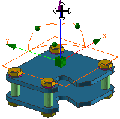

截面概述

截面使您能够创建横截面视图。
可以实现绝大部分截面功能，比如从图形窗口中使用动态手柄和输入框生成线性或角度的位置。
剖切部件或装配在查看复杂部件内部或者查看部件之间的相互关系时，会非常有用。
-
新建截面命令将会打开视图截面对话框、动态操纵手柄以及2D 截面查看器窗口，可以使用这些工具创建各种截面。
-
 编辑工作截面用来编辑现有截面，或者没有截面时创建新的截面。
编辑工作截面用来编辑现有截面，或者没有截面时创建新的截面。 -
 剪切工作截面用来打开或关闭视图剖切。
剪切工作截面用来打开或关闭视图剖切。启用时，剪切平面将与选择过滤器中位于边界体内的任何对象一起显示，亦即位于截面一侧的模型将被隐藏。
关闭时，模型将显示其原始外形。
位于何处？
|
工具条 |
视图→剪切工作平面 视图→编辑工作平面 剖视图下拉菜单→新建截面 |
|
菜单 |
视图→截面→剪切工作平面 视图→截面→编辑工作截面 视图→截面→新建截面 |
|
快捷菜单 |
编辑工作平面→Ctrl + H |